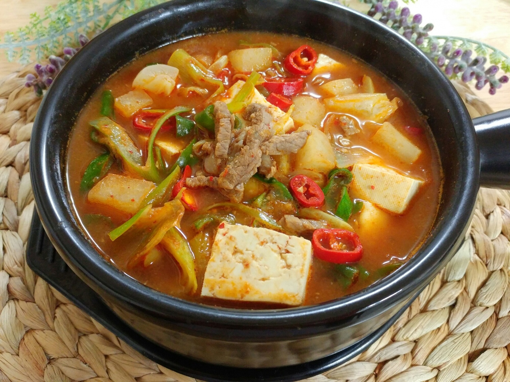

국, 찌개
* 김치찌개
한국의 대표적인 음식 중 하나인 김치찌개입니다!
김치를 기반으로 하는 요리이며, 한국인이 가장 좋아하는 한식으로 꼽힙니다.
재료 : 김치 한 그릇 분량, 돼지고기 200g, 두부, 대파, 양파 반개 다진마늘(1스푼), 고춧가루(1스푼)
<과정>
1.양파 반 개와 대파를 썰어줍니다.
2. 냄비에 식용유를 둘러준 후, 돼지고기와 다진마늘을 넣고 중불에서 익혀줍니다.
3. 고기가 어느 정도 볶아지면 김치를 넣고 김치가 익을 때까지 같이 볶아줍니다.
4. 김치가 익으면, 재료가 살짝 잠길만큼 물을 넣습니다.
5. 김치국물 한 국자도 넣어줍니다.
6. 썰어 둔 양파를 넣고 고춧가루를 넣어줍니다.
(김치가 시면 설탕을 넣어도 괜찮습니다.)
7. 두부를 넣고 중불에서 5분 정도 끓여준 후 대파를 넣습니다.
얼큰하고 맛있는 김치찌개 완성!
* 된장찌개
김치찌개에 이어 대표적인 음식인 된짱지개입니다!
된장은 한국의 전통 발효음식이며 콩으로 메주를 쑤어 말린 뒤 발효시킨 것을 뜻하는데,
주로 음식의 양념으로 쓰입니다.
재료 : 감자, 애호박, 양파, 두부, 된장, 쌈장, 고춧가루
<과정>
1. 감자와 애호박, 양파, 두부를 한 입 크기로 썰어줍니다.
2. 가스레인지에 냄비를 올리고 밥 한 공기 분량의 물을 넣어줍니다.
3. 냄비에 감자부터 넣어주고, 물이 끓으면 된장과 쌈장 각각 한 스푼씩 넣어줍니다.
4. 된장과 쌈장을 넣어주고 난 후 물이 끓으면 애호박과 양파를 넣어줍니다.
5. 2분 정도 끓이고 난 뒤 두부를 넣어주고 마지막으로 고춧가루 반스푼을 넣어줍니다.
한국의 맛 된장찌개 완성!
* 미역국
혈액순환을 돕고 피를 맑게하는 미역국!
또한 미역국은 '태어난 날'을 상징하기도 하는데요, 미역국 같이 요리해봅시다!
재료 : 미역, 소고기, 참기름, 다진마늘, 멸치액젓
<과정>
1. 먼저 미역을 10분 정도 불려줍니다.
2. 소고기는 키친타올로 핏기를 살짝 제거해줍니다.
3. 불린 미역을 채망에 옮기고 미끌거리는 게 없게끔 미역을 씻겨줍니다.
4. 씻은 미역의 물기를 짜주고 먹기 좋은 크기로 자릅니다.
5. 가스레인지에 냄비를 올리고, 냄비에 참기름 두 스푼과 소고기, 다진마늘 반스푼, 미역을 넣고 5분 정도 같이 볶아줍니다.
6. 볶은 후, 재료가 넉넉히 잠길 정도로 물을 넣고 센 불에서 끓입니다.
7. 국이 끓으면 중불로 줄이고, 소금 1ts과 멸치액젓3큰술을 넣어준 후, 냄비 뚜껑을 닫고
중약불에서 20분간 끓입니다.
맛있고 몸에 좋은 미역국 완성!